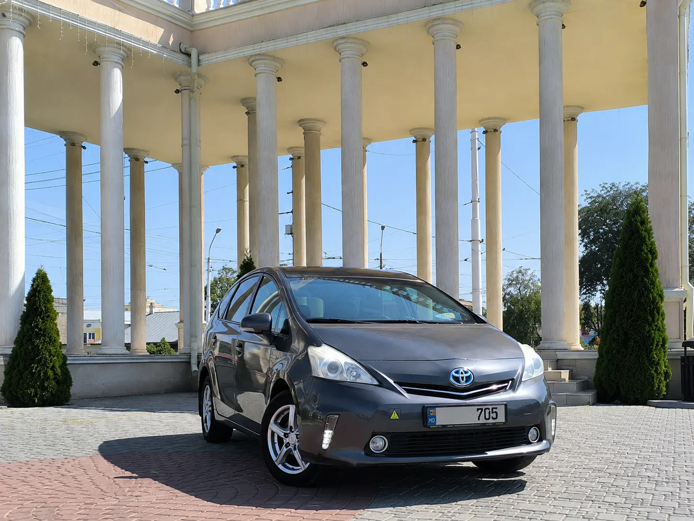

БЕНДЕРЫ — КИШИНЁВ
- Расстояние
- около 60–70 км
- Время в пути
- обычно 60–90 минут
- Цена
- от 550 руб. ПМР
- Формат
- от адреса до адреса
Расстояние и время зависят от точных адресов, дорожной обстановки и прохождения контрольных пунктов. Итоговую цену подтверждаем до поездки.
Стоимость заранее
Цена подтверждается до выезда и не меняется неожиданно после поездки.
До нужного адреса
Подача от двери и доставка прямо до указанного адреса в Кишинёве.
Помощь с багажом
Поможем разместить чемоданы в просторном багажнике Toyota Prius+.
На связи 24/7
Контролируем заказ от подтверждения до завершения поездки.

КАК ПРОХОДИТ ПОЕЗДКА БЕНДЕРЫ — КИШИНЁВ
ASM Transfer выполняет поездки из Бендер в Кишинёв и обратно по предварительному заказу. Водитель забирает пассажиров от дома, офиса или гостиницы и довозит без пересадок до нужного адреса в Кишинёве. Маршрут подходит для поездок в клинику, на вокзал, в гостиницу, торговый центр или на деловую встречу.
При бронировании сообщите дату, желаемое время выезда, адрес подачи, конечную точку и количество пассажиров. Если едете с ребёнком или крупным багажом, предупредите заранее: подготовим детское кресло и проверим, что чемоданы удобно разместятся. Стоимость и время подачи подтверждаем до выезда.
Заказать можно и обратное направление — из Кишинёва в Бендеры. Для ночной поездки или прибытия к определённому времени лучше обратиться заранее, чтобы автомобиль был закреплён за заказом.
ТРИ ШАГА ДО ПОЕЗДКИ
Заявка
Напишите дату, время, адреса подачи и назначения.
Подтверждение
Согласуем стоимость и детали поездки до выезда.
Поездка до адреса
Заберём в Бендерах и доставим к нужной точке в Кишинёве.
ОТВЕТЫ ПЕРЕД БРОНИРОВАНИЕМ
Сколько занимает дорога?
Обычно около 60–90 минут. Время зависит от адресов, трафика и прохождения контрольных пунктов.
Можно заказать обратный маршрут?
Да. Работаем Кишинёв — Бендеры и принимаем заказы туда и обратно.
Есть ли детское кресло?
Да, сообщите возраст ребёнка при заказе, чтобы мы заранее подготовили подходящее кресло.
Как узнать точную цену?
Напишите адреса и дату поездки в WhatsApp или позвоните. Стоимость подтверждаем до выезда.
ПОПУЛЯРНЫЕ МАРШРУТЫ ASM TRANSFER
НАПИШИТЕ ДАТУ,
ВРЕМЯ И АДРЕС
Ответим и заранее подтвердим стоимость трансфера.